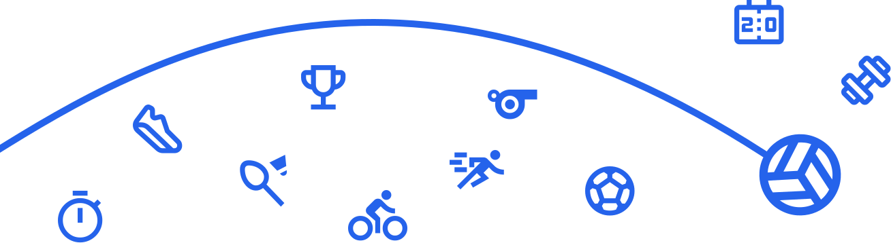

ВОСПИТАТЕЛЬНАЯРАБОТА
«Школа воспитывает не знаниями, а примером и делами.»
«Школа воспитывает не знаниями, а примером и делами.»
— это система мероприятий и действий, направленных на формирование ценностей, культуры общения, ответственности и личностного роста школьников.

В школе регулярно проводятся классные часы и воспитательные мероприятия, направленные на формирование у учащихся духовно-нравственных ценностей, культуры общения, безопасного поведения и здорового образа жизни. Тематика охватывает актуальные вопросы современности: патриотизм, толерантность, экология, профилактика правонарушений, личная безопасность, развитие лидерских качеств.
Для раскрытия способностей и талантов детей в школе работают различные объединения по интересам:спортивные секции (футбол, лёгкая атлетика, волейбол и др.);творческие кружки (театральная студия, хореография);интеллектуальные клубы и предметные кружки (математика, робототехника, английский клуб).Эти направления помогают каждому ребёнку найти своё призвание и проявить лучшие качества.
Особое внимание уделяется формированию у учеников патриотизма, любви к Родине, уважения к культурным традициям Казахстана. Проводятся мероприятия, посвящённые государственным праздникам, встречи с ветеранами, экскурсии в музеи и памятные места.Духовно-нравственное воспитание строится на ценностях уважения, честности, ответственности, дружбы и взаимопомощи.
Воспитательная система школы-гимназии #1 разработана по программе "Адал Азамат" и основана на принципах сотрудничества педагогов, родителей и учащихся. Она направлена на:развитие гармоничной личности;формирование активной гражданской позиции;воспитание культуры здоровья и безопасного поведения;поддержку талантливых и инициативных учеников.Благодаря системному подходу воспитательная работа в школе помогает детям становиться ответственными, творческими и успешными личностями.